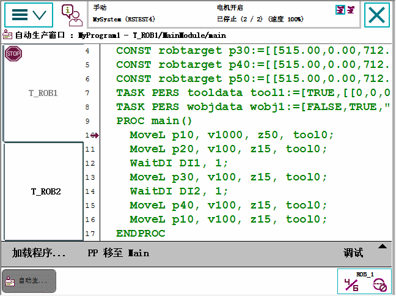

已使用 Production Window（运行时窗口）查看程序运行时的程序代码。
本节显示了 Production Window（运行时窗口）的图示。

Load Program（加载程序） | 加载新程序。 | ||
PP to Main（PP 移至 Main） | 将程序指针移至例行程序 Main。 | ||
Debug（调试） | 仅在手动模式下才可使用 Debug（调试）菜单。Modify Position（修改位置），请参阅在 Program Editor（程序编辑器）或 Production Window（运行时窗口）中修改位置。。Show Motion Pointer（显示动作指针）和 Show Program Pointer（显示程序指针），请参阅关于程序与动作指针。Edit Program（编辑程序），请参阅Program Editor（程序编辑器）。
|